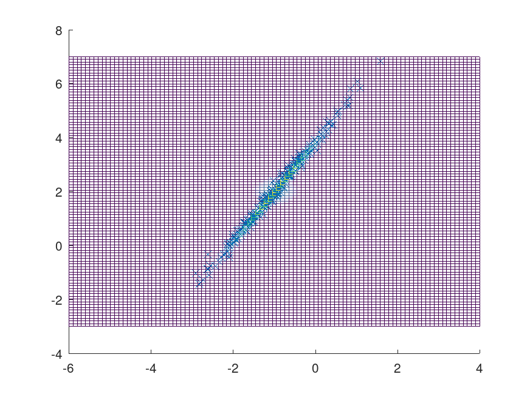

Function Reference: mhsample
- statistics: [smpl, accept] = mhsample (start, nsamples, property, value, …)
Draws nsamples samples from a target stationary distribution pdf using Metropolis-Hastings algorithm.
Inputs:
- start is a nchain by dim matrix of starting points for each Markov chain. Each row is the starting point of a different chain and each column corresponds to a different dimension.
- nsamples is the number of samples, the length of each Markov chain.
Some property-value pairs can or must be specified, they are:
(Required) One of:
-
"pdf" pdf: a function handle of the target stationary distribution to
be sampled. The function should accept different locations in each row and
each column corresponds to a different dimension.
or
- "logpdf" logpdf: a function handle of the log of the target stationary distribution to be sampled. The function should accept different locations in each row and each column corresponds to a different dimension.
In case optional argument symmetric is set to false (the default), one of:
-
"proppdf" proppdf: a function handle of the proposal distribution that
is sampled from with proprnd to give the next point in the chain. The
function should accept two inputs, the random variable and the current
location each input should accept different locations in each row and each
column corresponds to a different dimension.
or
- "logproppdf" logproppdf: the log of "proppdf".
The following input property/pair values may be needed depending on the desired outut:
- "proprnd" proprnd: (Required) a function handle which generates random numbers from proppdf. The function should accept different locations in each row and each column corresponds to a different dimension corresponding with the current location.
- "symmetric" symmetric: true or false based on whether proppdf is a symmetric distribution. If true, proppdf (or logproppdf) need not be specified. The default is false.
- "burnin" burnin the number of points to discard at the beginning, the default is 0.
- "thin" thin: omits thin-1 of every thin points in the generated Markov chain. The default is 1.
- "nchain" nchain: the number of Markov chains to generate. The default is 1.
Outputs:
- smpl: a nsamples x dim x nchain tensor of random values drawn from pdf, where the rows are different random values, the columns correspond to the dimensions of pdf, and the third dimension corresponds to different Markov chains.
- accept is a vector of the acceptance rate for each chain.
Example : Sampling from a normal distribution
start = 1; nsamples = 1e3; pdf = @(x) exp (-.5 * x .^ 2) / (pi ^ .5 * 2 ^ .5); proppdf = @(x,y) 1 / 6; proprnd = @(x) 6 * (rand (size (x)) - .5) + x; [smpl, accept] = mhsample (start, nsamples, "pdf", pdf, "proppdf", ... proppdf, "proprnd", proprnd, "thin", 4); histfit (smpl); |
See also: rand, slicesample
Source Code: mhsample
Example: 1
## Define function to sample
d = 2;
mu = [-1; 2];
Sigma = rand (d);
Sigma = (Sigma + Sigma');
Sigma += eye (d) * abs (eigs (Sigma, 1, "sa")) * 1.1;
pdf = @(x)(2*pi)^(-d/2)*det(Sigma)^-.5*exp(-.5*sum((x.'-mu).*(Sigma\(x.'-mu)),1));
## Inputs
start = ones (1, 2);
nsamples = 500;
sym = true;
K = 500;
m = 10;
proprnd = @(x) (rand (size (x)) - .5) * 3 + x;
[smpl, accept] = mhsample (start, nsamples, "pdf", pdf, "proprnd", proprnd, ...
"symmetric", sym, "burnin", K, "thin", m);
figure;
hold on;
plot (smpl(:, 1), smpl(:, 2), 'x');
[x, y] = meshgrid (linspace (-6, 4), linspace(-3, 7));
z = reshape (pdf ([x(:), y(:)]), size(x));
mesh (x, y, z, "facecolor", "None");
## Using sample points to find the volume of half a sphere with radius of .5
f = @(x) ((.25-(x(:,1)+1).^2-(x(:,2)-2).^2).^.5.*(((x(:,1)+1).^2+(x(:,2)-2).^2)<.25)).';
int = mean (f (smpl) ./ pdf (smpl));
errest = std (f (smpl) ./ pdf (smpl)) / nsamples ^ .5;
trueerr = abs (2 / 3 * pi * .25 ^ (3 / 2) - int);
printf ("Monte Carlo integral estimate int f(x) dx = %f\n", int);
printf ("Monte Carlo integral error estimate %f\n", errest);
printf ("The actual error %f\n", trueerr);
mesh (x, y, reshape (f([x(:), y(:)]), size(x)), "facecolor", "None");
Monte Carlo integral estimate int f(x) dx = 0.323921
Monte Carlo integral error estimate 0.058286
The actual error 0.062122
|

Example: 2
## Integrate truncated normal distribution to find normilization constant
pdf = @(x) exp (-.5*x.^2)/(pi^.5*2^.5);
nsamples = 1e3;
proprnd = @(x) (rand (size (x)) - .5) * 3 + x;
[smpl, accept] = mhsample (1, nsamples, "pdf", pdf, "proprnd", proprnd, ...
"symmetric", true, "thin", 4);
f = @(x) exp(-.5 * x .^ 2) .* (x >= -2 & x <= 2);
x = linspace (-3, 3, 1000);
area(x, f(x));
xlabel ('x');
ylabel ('f(x)');
int = mean (f (smpl) ./ pdf (smpl));
errest = std (f (smpl) ./ pdf (smpl)) / nsamples^ .5;
trueerr = abs (erf (2 ^ .5) * 2 ^ .5 * pi ^ .5 - int);
printf ("Monte Carlo integral estimate int f(x) dx = %f\n", int);
printf ("Monte Carlo integral error estimate %f\n", errest);
printf ("The actual error %f\n", trueerr);
Monte Carlo integral estimate int f(x) dx = 2.401350
Monte Carlo integral error estimate 0.015908
The actual error 0.008774
|